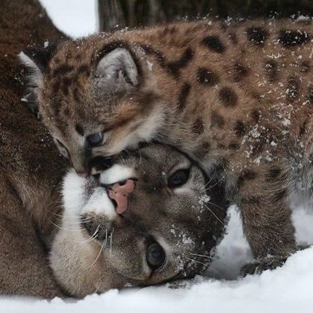
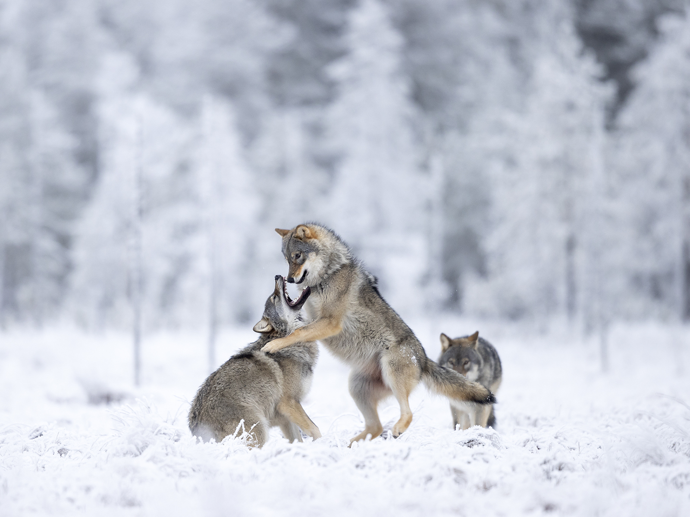
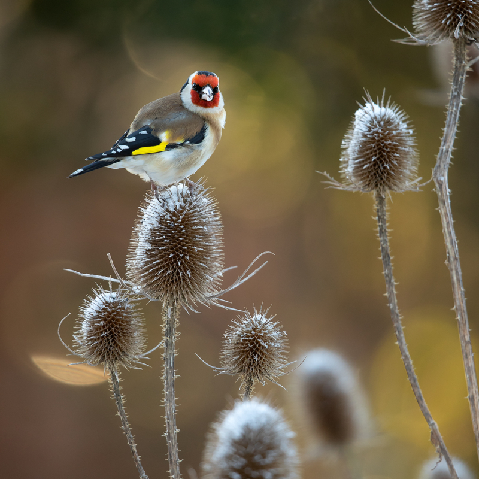

Photography
Will Burrard-Lucas
“Luck is when opportunity meets preparedness” – Seneca

Whispers of the Wilderness
Discover the untamed beauty of nature and its awe-inspiring creatures in their natural habitats.

The Call of the Untamed
Experience the thrilling adventure of the wild, where every roar, chirp, and rustle reveals the
wonders of nature.

The Symphony of the Skies
Discover the vibrant world of birds, where every flap of wings tells a story of elegance and
survival.
I’m Will Burrard-Lucas, a wildlife photographer from the UK. I aim to use technology and innovation
to photograph wildlife in new ways.When I was young, my family spent several years living in
Tanzania. My earliest memories are of being on safari and from those seeds grew a lifelong
fascination with the natural world and a connection with the continent of Africa which continues to
draw me back today. In 2012, my wife and I moved to Zambia for a year, and since 2017 I have
predominately focused on projects in Kenya.
In 2017, I started a project to document the last of Africa’s iconic elephants with tusks reaching
down to the ground, in collaboration with the Tsavo Trust and Kenya Wildlife Service. In 2019, this
culminated in a coffee table book, “Land of Giants”.
In 2019, I used my Camtraptions system to capture rare high-quality camera trap images of a
melanistic leopard in Africa. My new book, “The Black Leopard”, was released in March 2021.